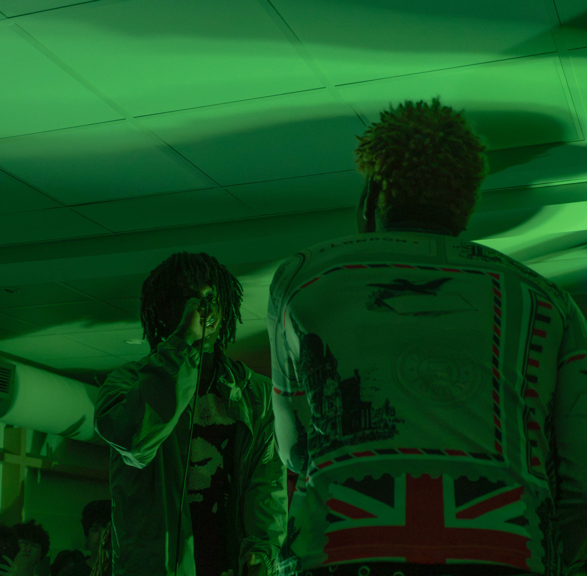

Green Room Frequency
Close-quarters vocal exchange bathed in monochrome emerald venue lighting during a late-night Toronto set.
Camera & Lighting Notes
Shot at wide aperture to preserve shadow depth across the ceiling tiles while keeping both artists sharp in low light.